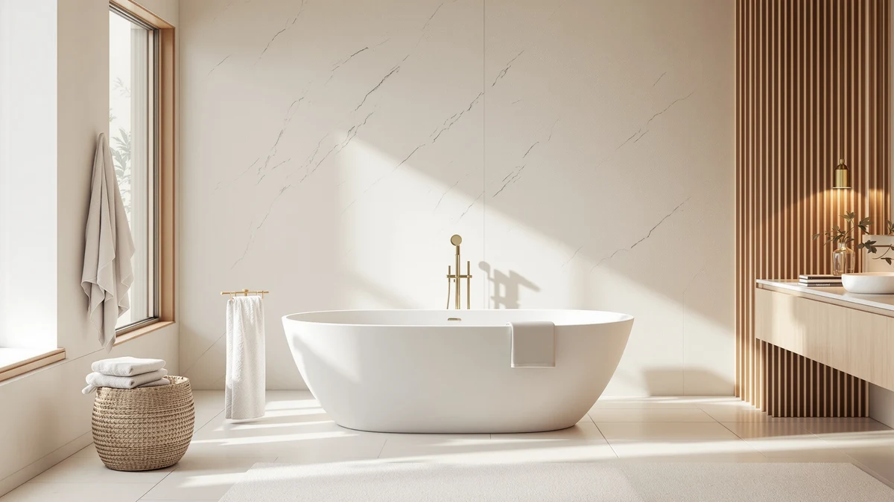

What Is the Best Material for a Freestanding Bathtub: Complete Guide (2026)
Prices and picks verified as of September 2026. Independent, reader-supported reviews.


Things to Know Before You Buy
- Acrylic is the default for good reason. Most acrylic freestanding tubs weigh 60 to 120 pounds empty, light enough for two people to carry and set on a standard floor.
- Cast iron holds heat the longest but weighs 300 to 500 pounds empty. Confirm your floor can handle that weight filled with water before you order one.
- Stone resin and solid surface tubs split the difference. They look like carved stone, weigh more than acrylic, and typically cost several hundred dollars more.
- Copper tubs are a design statement, not a practical default. They conduct heat quickly, need regular polishing, and start well above $1,500.
- Material determines who can install it. Acrylic is a realistic weekend project; cast iron and stone resin usually call for professional movers and installers.
What is the best material for a freestanding bathtub? For most homeowners renovating a standard bathroom, acrylic wins the comparison, since it weighs a fraction of cast iron or stone resin, keeps bathwater warm longer than fiberglass, and costs far less than copper, all without forcing you to reinforce the floor first.
That answer changes once you factor in your floor structure, your budget, and how long you want the tub to last. A ground-floor bathroom over a concrete slab can carry a 400-pound cast iron clawfoot without any extra engineering, while the same tub on a second-story addition might need a contractor to check the joists first. Your material choice sets the ceiling on price, weight, heat retention, and how much upkeep the tub demands for the next twenty years.
Acrylic, cast iron, stone resin, copper, and fiberglass are the five materials you will actually find in freestanding tubs today. Each performs differently on weight, price, heat retention, and maintenance, and each has its own way of sending homeowners back to the showroom after delivery day.
What You Need to Know
Every freestanding bathtub material trades off against three variables: weight, heat retention, and price. Heavier materials like cast iron and stone resin hold heat longer because the mass itself absorbs warmth from the water and radiates it back, but that same mass turns installation into a two-person job at best and a professional move at worst. Lighter materials like acrylic and fiberglass install easily and cost less, but the water cools faster during a long soak.
Price follows the same pattern more often than not. A quality acrylic freestanding tub typically runs $400 to $900, a stone resin model runs $1,200 to $2,500, and a genuine cast iron clawfoot starts around $2,000 and climbs from there depending on the finish. Copper sits at the top of the range, often $1,500 to $4,000 for a hand-hammered tub, and it demands more maintenance than any other material on this list.
Before you compare specific models, decide which of the three variables matters most in your bathroom. If your floor can't take extra weight, that decision alone rules out cast iron and most stone resin tubs, regardless of how good the finish looks in photos.
Types and Categories
Acrylic
Acrylic sheets get vacuum-formed over a mold and reinforced with fiberglass on the back, which keeps the tub light (60 to 120 pounds empty) while the surface stays warm to the touch. It scratches more easily than porcelain enamel, but a polishing kit removes light scuffs, and the low weight makes it the easiest material to carry into a finished bathroom.
Cast Iron
A thick iron shell gets coated in porcelain enamel, producing a glass-smooth finish that resists chips and holds heat for the length of a long soak. The trade-off is weight: 300 to 500 pounds empty, which usually means a structural check and professional installers.
Stone Resin and Solid Surface
These composite materials blend crushed natural stone with resin, giving you a matte, carved-stone look at roughly half the weight of cast iron. They hold heat better than acrylic and cost more, and the matte surface can stain if you don't wipe up standing water.
Copper and Fiberglass
Copper tubs are hand-hammered and finished with a protective wax coat. They look striking but conduct heat away from bathwater faster than any other material here and need regular repolishing to keep their color. Fiberglass sits at the entry-level end of the market: it is the lightest and cheapest option, but it flexes underfoot, scratches easily, and rarely lasts as long as acrylic.
How to Choose
Start with your floor, not the tub. A cast iron or stone resin freestanding bathtub can weigh 400 pounds or more once it's filled with water and a bather, and older homes with wood-frame floors sometimes need a contractor to confirm the joists can carry that load. If you're on a concrete slab or a reinforced floor, this constraint disappears and you can choose on looks and heat retention alone.
Next, decide how much you value heat retention against convenience. If you take long soaking baths and want the water to stay warm past the 30-minute mark, cast iron or a thick stone resin tub earns its higher price and extra installation effort. If you want a straightforward tub that a couple of people can install over a weekend, acrylic answers the question of what is the best material for a freestanding bathtub without complicating the project.
Budget shapes the decision as much as either of those factors. Acrylic gives you the most tub for the least money, and the savings often free up room in the budget for a better faucet or a heated towel bar. Cast iron, stone resin, and copper are long-term investments: they cost more upfront, but a well-maintained cast iron tub can still look good after 50 years, which lowers its cost per year of use even though the sticker price is higher.
Finally, think about maintenance tolerance. Acrylic just wants a soft cloth and a non-abrasive cleaner. Copper is needier: it wants periodic polishing so the patina doesn't dull. Stone resin sits in the middle, needing prompt wipe-downs so standing water doesn't stain the matte surface. Pick the material whose upkeep routine you'll actually keep up with, not the one that looks best in a showroom photo.
Common Mistakes to Avoid
The most expensive mistake is buying a heavy tub before checking the floor. Homeowners fall for a cast iron clawfoot online, have it delivered, and then learn from a contractor that the second-floor joists need reinforcement before installation, adding thousands to the project. Confirm your floor's load capacity before you order anything over 200 pounds.
A close second is picking a material purely on appearance and ignoring heat retention. Fiberglass and thin acrylic tubs look identical to their sturdier counterparts in a product photo, but a bath that cools in ten minutes defeats the purpose of a soaking tub. Read the wall thickness and material grade in the listing, not only the shape.
Buyers also underestimate copper's upkeep. The reddish patina that gives copper its appeal will dull and darken without regular waxing, and once it develops uneven staining, restoring the finish takes real effort. If you don't want a maintenance routine, skip copper regardless of how it looks in the showroom.
Last, don't assume the tub price includes everything. Freestanding tubs almost never include the faucet, and a floor-mount filler adds $150 to $400 on top of the tub itself, plus rough-in plumbing if your bathroom doesn't already have a floor supply line.
Care and Maintenance
Acrylic
Wipe acrylic down with a soft cloth and a mild, non-abrasive cleaner after each use to prevent soap scum from building up. Avoid bleach, acetone, and scouring powder, since they dull the glossy finish over time. Light scratches buff out with an acrylic polishing kit.
Cast Iron and Stone Resin
Porcelain enamel over cast iron shrugs off most household cleaners and only needs an occasional gentle scrub to stay glossy for decades. Stone resin needs a bit more attention: wipe up standing water promptly and reseal the surface every year or two to prevent staining on the matte finish.
Copper
Copper requires the most upkeep of any material on this list. Rinse it after every use, dry it to prevent water spotting, and apply a copper-safe wax every few months to maintain the patina. Skip this routine and the finish will darken unevenly within a year. Whichever material you choose, avoid abrasive pads and harsh chemical cleaners across the board, since every finish on this list scratches or dulls faster than the manufacturer's marketing suggests.
Our Top Picks
If acrylic is your answer to what is the best material for a freestanding bathtub, these three tubs show how the size and price trade-offs actually play out.

Editor’s Pick
59 Inch Acrylic Freestanding Bathtub
A 59-inch acrylic soaker that fits most standard bathrooms, with the warmth and light weight that make acrylic the default material for a first freestanding tub.
$629.99
Check Price on Amazon
Best Value
59" Acrylic Freestanding Bathtub Contemporary
The same acrylic warmth and easy installation at a lower price, a sensible pick if your budget needs room for the faucet and plumbing.
$559.99
Check Price on Amazon
Premium Choice
66" Acrylic Freestanding Soaking Bathtub
Seven inches longer and deeper than the other two picks, giving you more room to stretch out without moving up to a heavier, harder-to-install material.
$469.79
Check Price on AmazonFrequently Asked Questions
What is the best material for a freestanding bathtub for most homeowners?
Acrylic, because it weighs 60 to 120 pounds empty, costs $400 to $900 for a quality model, and installs without reinforcing the floor. It gives up some heat retention compared to cast iron, but for most bathrooms that trade-off is worth the lower price and easier installation.
Which freestanding tub material holds heat the longest?
Cast iron. The thick iron shell absorbs heat from the initial fill and radiates it back into the bathwater, keeping a soak warm well past 30 minutes. Stone resin comes second, and acrylic cools the fastest of the common materials.
Is acrylic or cast iron better for a freestanding bathtub?
It depends on your floor and your budget. Acrylic is lighter, cheaper, and easier to install, while cast iron holds heat longer and can last for decades, but weighs 300 to 500 pounds empty and often needs professional installation.
Does a stone resin bathtub need special floor support?
Usually not on a ground-floor slab, but on an upper floor with a wood-frame structure, check with a contractor first. Stone resin tubs typically weigh more than acrylic but less than cast iron, so the answer depends on your specific floor.
How do you clean an acrylic freestanding bathtub without damaging it?
Use a soft cloth and a mild, non-abrasive cleaner, and rinse it after each use to prevent soap scum buildup. Avoid bleach, acetone, and abrasive scouring pads, since they dull the glossy finish, and buff out light scratches with an acrylic polishing kit.
Verdict
So, what is the best material for a freestanding bathtub? For the large majority of bathroom renovations, acrylic remains the answer: it weighs a fraction of cast iron or stone resin, keeps water comfortably warm for a normal-length bath, and costs hundreds less than the heavier alternatives, all while staying light enough for two people to install without a contractor. Cast iron and stone resin are worth the extra weight and cost only if you have a reinforced floor and want a finish that will still look good in twenty years, and copper belongs on your list only if you're prepared to polish it regularly. If you've decided acrylic fits your bathroom and your budget, the Garvee 59 Inch Acrylic Freestanding Bathtub is a solid starting point: a standard size, a friendly price, and the warmth and low weight that make acrylic the default material in the first place.